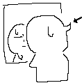
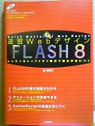
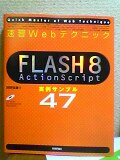
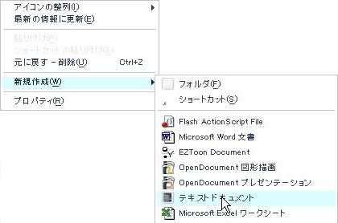
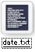
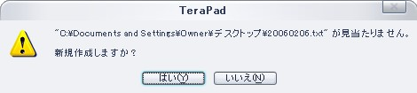
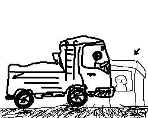

あーFlash作成おもしれー(´∀`)
色々書いてます。
ん、「描く」かな？
まーどっちでもいいや。
ああ、スクリプトは「書く」で、絵は「描く」やね。
当たり前か('`
あーいかん、タブレットとやらが欲しくなってきた。
噂によると筆圧とかが感知出来るらしいやん。
うほほー、面白そうだにゃ。
次にお給料貰ったら、タブレットとサンドバッグ買おうっと。
 変な寝癖が一週間以上直らない。
毎回同じ寝相って事なのかな。
差し出された手を、求める手を、
簡単に払いのける事ほど残酷な事は無いってやっと気づいた。
努力は惜しんじゃ駄目。
現状に安心しきってちゃ駄目。
おーけー？＞TEVA
っつーわけで今日から、沖縄いってきまーす(･∀･)
出発は明日なんですが、俺の家から関空まで2時間以上はかかる事間違いないので、
今晩はいつもお世話になっている友達の家に泊まり、1時間短縮しようという運びです。
うひゃひゃ
いいのか俺、こんな事してて、、、○|￣|＿
ま、いーや。
決まった日程はしゃーない。
まー、
これから先、会えるのもこれが最後の奴もいるかもしれんしねー
感慨深いや(´ｪ`)
ほんと、大学って所は一生物の友達が出来るところですよね。
…泣くもんか、泣かないぞ(ﾉД`)
いってきまーす(･∀･)ﾉｼ
ひ、ひ、、ひ、、、
か、か、、が、
し、、、
な、なにぬねの。
東野圭吾はどこかいなーっと。
…あれ？(⊃д⊂)ｺﾞｼｺﾞｼ
ひ、ひ、、ひ、、、(略
- 原りょう
- 東雅夫
- (無し)
- 氷川透
- 平谷美樹
…
一冊も無いのかよ！！(#ﾟДﾟ),;'.･
東野圭吾シリーズ、ぜーーんぶ貸し出し中でした||i○|￣|＿|||
チキショー
プログラムソース眺めるの大好きです、どうもTEVAです。
本日、一月分のお給料を貰ってきました。
わたくし、お給料が出ると必ずと言っていいほど本を買います。
しかもわりと奮発して、普段なら買うのをためらっちゃうような値段の奴をば。
今回購入したのは以下の二冊。
 計5,901円也。
うひゃひゃひゃ
欲しいものを手に入れるこの快感。
プライスレス
うょー勉強するぞーー(･∀･)
あー、日々の自堕落な生活のツケが〜
ツケがーー ○|￣|＿
# ぁゅちゅんのブログが閉鎖されたのでショックです。リンク消さなきゃー…
# って事で、ちょこっとリンクを整理しました。
# 追加サイト無し、紹介文地味変更。
# ギルドページPandA日記は閉鎖し、Mixiへと移行しました。
# 連絡とかに便利よ、Mixi。
いや、ほんとさ、喧嘩なんてしたくないですよ。
例え、単なる言い合いでもさ。
その瞬間はお互い憎みあってるわけだ。
憎むまでいかなくても、むかついてるのは間違いないわけで。
もうね、嫌なんです。
相手を憎みたくないんです。
なんでも受け入れて返していきたいと思ってるのに、
その余地がお互いに無くなるのがすっげー嫌なんです。
そんな状況を作ったり、些細な行き違いで出来たりするのが、、、
悲しいんです。
いやー、アクションスクリプトおもしれーですわ。
四角しか描いてないのにスクリプトを書きこむだけでローディング画面が出来ちゃったり。
やばい。
いやーほんと、月虹姫様には感謝感謝。
新世界の扉どーん
これからもボチボチとうざいFlash公開するかもしれんのでー、皆様覚悟しとってください＾−＾
スクリプトといえば、昔っから俺が扱ってきているバッチファイル。(過去記事)
今日は「ちょっとしたひと手間を省く」スクリプトを紹介。
えー、
普段メモ帳を起動する時は、適当なところで右クリックして、新規作成→テキストドキュメント。
で、記述が終わったらば保存する場所をダイアログから指定して保存…
っつー手順ですよね。
もうね、個人的な意見ですが、その作業がめんどくせーーの。
こちとらちょっとしたメモを(アドレスとかアスキーアートとか)書きたいだけなんだよ！ヽ(`д´)ﾉ
みたいな。
ならば、アイコンをクリックするだけでその場所にテキストファイルが作られるだけでも物凄い手間を省けるんじゃないのか？！(･∀･)
って事で以下のスクリプト。
@echo off
for /F "tokens=1-3 delims=/ " %%a in ('date /t') do SET DT=%%a%%b%%c
start notepad %DT%
こいつをコピーしまして、メモ帳に貼り付け、拡張子をDate.batにして保存してくださいｂ
  →コピーした上のスクリプトを貼り付ける。→ 
作業はこれで終了。
で、おもむろに出来上がったファイルをクリックすると、、、

このようなダイアログが現れて新しいメモ帳が作られ、いきなり作業が開始できますｂ
うひょぉ(･∀･)らくちんポン♪
んでは、また次回。
ｵﾜﾘ
現在、Flash、、、もといアクションスクリプトとやらを勉強しております。
で、ちょっと作ってみました。
同じページにするとうっとおしいので、こちらから別ページで開きます。
題して、FlyTEVA。 飛ぶ俺。うざい事この上なし。
メイポ行きたいけど行けないです。
いい加減チャットがしたいです。
フラストレーション溜まって自爆しそうです、どうもTEVAです。
悔しいので、なんか面白いもんでも無いかなーってネットを徘徊してると、
やけに気持ちのよさそうなスクリーンセーバーを発見しました。
それがこの、Flight over sea 3D Screensaver v2.0
果てしなく続く青い海を飛んでいく気持ちよさが味わえます。 ←クリックで拡大ね。
慌しい日常から離れてちょっと一休みはどうでっか？
ダウンロードは、Rixane interactiveからどうぞ。
ふふふ、、、これを使えば俺の夢だった「空を自由に飛び回る」がちょっとだけ叶うのさ！！ヾ(ﾟ∀、ﾟ)ﾉ
今日はとある施設にて、Boxに入って、出たり入ったりする車のナンバーとかを控えて許可証を発行する、入退場管理のお仕事でした。
ここでいうBOXとはなんなのかってーと、
これです 
ウフ…ウフフ…
こーゆーのは学校とかにもあるもんですが、一回やってみたかったんだよねー
だって、駐輪場とか高速の料金所とか、中にいるのはおっちゃんばっかりでしょ。主に天下り役人
いやー、楽でしたわ。
雨に降られないしタバコも吸い放題で、暇だったら本も読めちゃう。ラジオからはクラシックが流れてていい感じ。
なんてったって仕事中に堂々と座っていられる素敵な職場ｗ
し か し
こんなとこに慣れてしまったらもう他のところで出来なくなってしまう事受け合い。
ここが楽だって感じられるのは、夏の暑さも冬の寒さも体験してるからであるわけで。
楽あれば苦あり、でも逆もまた然りって事よね。
で、今日読んでた本はシャオさんに教えてもらった「麻酔(著:渡辺淳一)」です。
もうね、ボロ泣きです。
一人きりだったからよかったものの、もし人に見られてたら大変なことになってましたね(ﾉ∀`;)
本でこんなに泣いたのは初めての経験かな。
感動とはちがくて、本当に悲しくなって泣いてしまったのです。
こういう医療をテーマにした小説は、大抵登場人物かテーマのどちらかに偏ってしまって内容が薄くなってしまったりするのですが、、、これは違いました。
きちんと医療技術と事件に絡んだ家族の心の動きの描写が非常に上手く書かれておりました。
高伸の心の動きが切なくて、、、
夢の中で会える妻の描写が美しくて、、、儚くて、、、哀しくて、、、
うわーん邦子さーーん。゜゜(´□｀｡)°゜。
繰り返し言いますが、わたくし。ボロ泣きしてしまいました。
シャオさん、素晴らしい本を紹介してくれて有難う。ぐっすん
あー、夢といえば。
妹者から夢バトンとやらを頼まれてしまいました。
もうバトンとかめんどいんですが、初の妹者とのコラボって事でいっちょやってみましょうか。
ううむ、バトンという名目で俺の心の内面があらわになってきている気がする（ぇ
【おまいの夢について、二・三の質問】
Ｑ１.小さい頃、何になりたかった？
☆ 電車の運転手です(b･д･)
指差し確認が超クーールだったからだと思われますｗ
Ｑ２.その夢は叶った？
☆ いえ、叶っていません。
どうもプラレールと同じぐらいにしか考えていなかったようで、
運転手は何百人もの乗客の命を預かり、超難しい試験と技能が必要だと知った時にはもう諦めていましたね(;´∀`)
Ｑ３.現在の夢は何ですか？
☆ 遊んでばっかですいません、って先に謝っときます(;´-ω-)
大型バイクを買って日本中、世界中を走り回る事。まじで10年ぐらい。
割と本気です。
遊んでばっかでごめんなさい。
Ｑ４.宝くじで３億円当たったらどうする？
☆ まず両親と妹者にどかーんと2億5千万ほどあげて、
残り5千万を資本にかなり有意義に働く。
え？だからこれも本気でそう思ってますってば。
Ｑ５.あなたにとって夢のような世界とは何？
☆ 機械とか使わずに、自分の能力だけで空が自由に飛べる世界ですわ。
このやけくそに広い空を自由に行き来出来ないのは勿体無過ぎるからね。
Ｑ６.昨晩見た夢は何？
☆ いつもなら適当に書くんですが(何 昨日見た夢はやけに鮮明だったのでちょっと書いて見ます。
その世界は
幾何学的な背景で、その上に人が立っている妙なところ。
しかもその人々の頭上には、なんかCGIっぽいコードが浮いてるんですね。
で、俺の手元にはなぜかキーボード。
何気なく
while ($s =~ /(($re_sjis_c)+)/go) {
$sjis += length($1);
}
と、そんな感じのとこを消したり足したり改変したりしていると、、、
その人の存在が消えてしまいました。
で、怖くなって滅茶苦茶に走っていくんですが、どうも肩がぶつかっただけでコードは改変されちゃうみたいで。
俺の通ってきた道とこれから行く道に立つ人のコードが滅茶苦茶になって消えていく、、、
あるいは物凄い形相に改悪されちゃった人なんかもいて。
もーわけわかめになっちまって泣いたり怒ったりしていると、何か遠くから音が聞こえた。
蛾みたいにそこに導かれてみると、なんか綺麗な女性がいて
壊れてしまったコードを音楽と共にどんどん治しているんです。
さっき俺が壊してしまった人のコードも、、、。
で、俺はその光景をアホみたいにぼーっと見ているとその女性は
何か一言、二言、俺に話しをした後二コリと笑い、消えた。
その瞬間、なぜか涙が止まらなくなって
「ごめんなさい」
って謝った。
と、そこで夢は終了。
めちゃくちゃ生々しくて怖かった。
ん？悲しかった？嬉しかった？
なんだろ(´-ω-`)?
ふと気が付くと、パジャマと布団は寝汗でびっしょりでしたとさ。
ｵﾜﾙ

{kind=link}